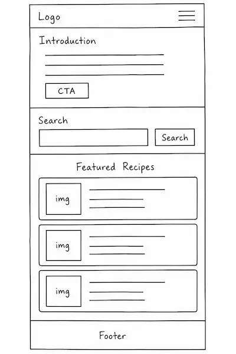
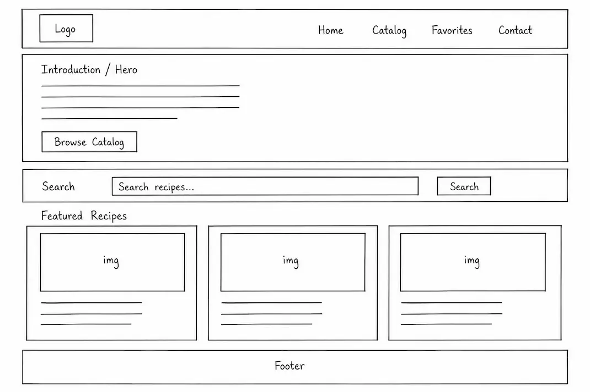

Herb Green
#1A5F5A
Headings, header, primary branding
Site Name
FlavorShelf
This name was selected because it suggests a curated “shelf” of flavors and recipes that visitors can browse, discover, and keep nearby. It communicates both variety (many cuisines and categories) and organization (a catalog you can search and save to favorites).
Url: flavorshelf.com.
Site Purpose
FlavorShelf is a Recipe Catalog that helps home cooks and food enthusiasts discover recipes from different cuisines and categories. The site provides recipe details such as name, image, category, cuisine, and preparation instructions. Visitors can search and filter recipes, open full details in a modal window, save favorites with Local Storage, and submit a contact or recipe suggestion form.
Main pages
- Home — introduction to the site, featured recipes, and a search section.
- Recipe Catalog — at least fifteen recipes from an API or local JSON, with filtering and search.
- Favorites — recipes the user has saved in the browser’s Local Storage.
- Contact / Suggest a Recipe — an HTML form for questions or recipe suggestions.
Scenarios
These questions represent visitors from the target audience and help shape the site content:
- How can I quickly find Italian dinner recipes that match a specific category?
- Where can I view full preparation instructions for a recipe without leaving the page?
- How do I save my favorite recipes so I can return to them later on this device?
- How can I suggest a new recipe or contact the site owner?
Color Scheme
The palette uses a deep herb green for structure and trust, a warm chili accent for calls to action, a soft cool background for readability, and near-black text for clear body copy. These colors are applied exclusively throughout this planning document.
Chili Accent
#E85D4C
Links, accent underlines, buttons / CTAs
Cool Mist
#F5F7F6
Page background
Charcoal
#1A1A1A
Body text and strong labels
Typography
Two fonts are selected to keep the design clear and readable while giving the brand a cookbook feel.
Libre Baskerville — Headings
Discover recipes from every cuisine
Used for the site name, section headings (h1–h3), and other display text. The serif style feels editorial and food-related without reducing readability at larger sizes.
Nunito Sans — Body & UI
Used for paragraphs, navigation, lists, form labels, and general interface text. It stays clean and comfortable for longer reading on mobile and desktop.
Wireframes
Black-and-white wireframes for the Home page focus on structure and layout for small and large viewports. Boxes represent content regions (header, intro, search, featured recipes, footer) before visual design is applied.
Small Viewport (Mobile)

Large Viewport (Tablet / Desktop)
